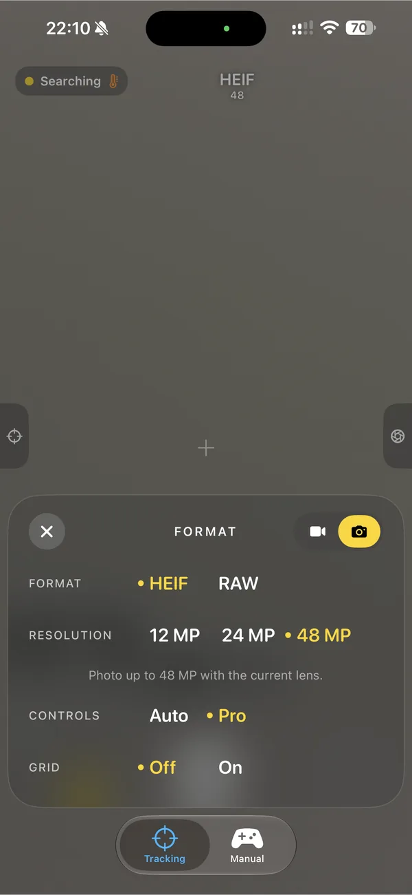
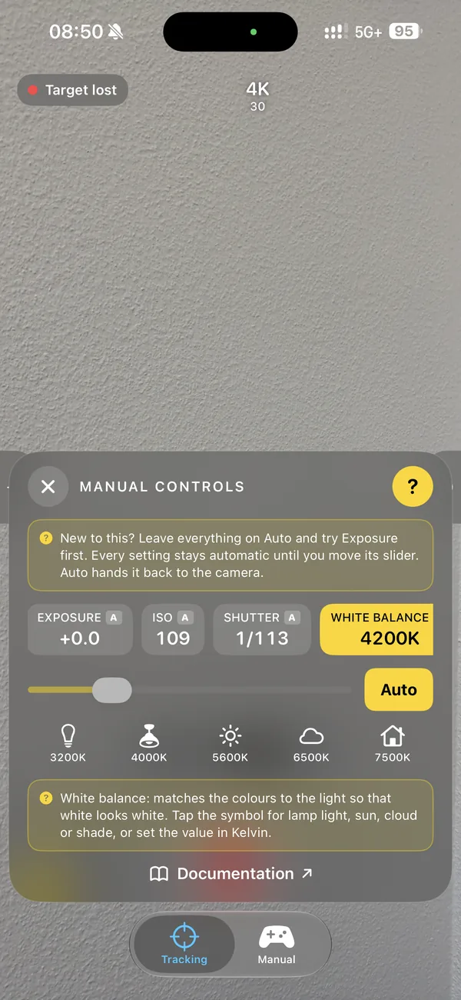

Камера и формат
Режимы видео и фото, разрешение, частота кадров, объективы.


Видео или фото
Переключатель слева от кнопки спуска меняет режим. Камера при этом перенастраивается, как в приложении «Камера» от Apple.
- Режим видео: плавный зум через все три объектива и автозум.
- Режим фото: полное фоторазрешение выбранного объектива. Изображение в видоискателе имеет формат 4:3.
Настройка формата
Нажмите на индикатор формата вверху по центру. Во время записи панель заблокирована.
Видео
| Параметр | Варианты |
|---|---|
| Разрешение | HD (1920 × 1080) или 4K (3840 × 2160) |
| Частота кадров | 24, 30 или 60 кадров в секунду, 25 для PAL |
| Кодек | HEVC; ProRes 422 HQ с Keepsight Pro |
| Управление | Авто Pro |
| Сетка | Выкл. Вкл. |
Фото
| Параметр | Варианты |
|---|---|
| Формат | HEIF или RAW (Apple ProRAW, с Keepsight Pro) |
| Разрешение | То, что даёт объектив, см. ниже |
| Управление | Авто Pro |
| Сетка | Выкл. Вкл. |
Ручные настройки
Ручные настройки: задайте ISO, затвор, баланс белого, оттенок и фокус сами, каждый по отдельности. Требуется Keepsight Pro.


Чтобы открыть их, нажмите на индикатор формата вверху и переключите Управление на Pro. Ручные настройки есть и на панели камеры; оттуда это работает и во время записи видео.
Окно низкое и не затемняет изображение, поэтому каждое изменение видно сразу. Маленькая буква «A» отмечает каждое значение, которое камера пока задаёт сама. Как только вы сдвинете ползунок, это значение фиксируется. Авто возвращает его камере, Всё авто сбрасывает всё. Ваши значения действуют для фото и видео и сохраняются, пока вы их не измените.
Только начинаете? Оставьте всё на «Авто» и сначала попробуйте экспозицию. Каждая настройка остаётся автоматической, пока вы не сдвинете её ползунок. «Авто» возвращает её камере.
Экспозиция
Экспозиция: делает всё изображение светлее или темнее, пока камера продолжает сама измерять свет. Самая простая настройка для начала.
Используйте её, когда кадр получается слишком тёмным или слишком светлым, например объект на фоне яркого неба, снег или сцена. Плюс делает светлее, минус темнее, с шагом в треть ступени от −3 до +3. Работает и при фиксированных ISO или затворе.
ISO
ISO: чувствительность сенсора. Чем выше значение, тем светлее изображение, но больше шума. Держите его настолько низким, насколько позволяет свет.
При дневном свете выбирайте низкое ISO для самого чистого изображения и повышайте его в помещении или в сумерках. Если зафиксировать только ISO, Keepsight сам подстроит выдержку, чтобы яркость оставалась правильной.
Кнопка спуска
Затвор: как долго экспонируется каждый кадр. Короткие выдержки, например 1/1000, замораживают быстрое движение. Длинные пропускают больше света, но смазывают движение.
Ставьте 1/1000 или короче для птиц, спорта и самолётов, чтобы они оставались резкими. Для естественно выглядящего видео берите примерно удвоенную частоту кадров, например 1/60 при 30 кадрах в секунду. Если зафиксировать только затвор, Keepsight сам подстроит ISO. В видео выдержка не может быть длиннее одного кадра; в режиме фото она доходит до 1/4 секунды.
Баланс белого
Баланс белого: подстраивает цвета под освещение, чтобы белое выглядело белым. Нажмите значок лампы, солнца, облака или тени либо задайте значение в кельвинах.
Зафиксируйте его, когда цвета меняются во время съёмки, например когда камера поворачивается с солнца в тень, или когда свет лампы выглядит слишком жёлтым. Значки задают 3200 K для ламп накаливания, 4000 K для люминесцентного света, 5600 K для солнца, 6500 K для облачного неба и 7500 K для тени. Ползунок охватывает от 2500 K до 10000 K.
Оттенок
Оттенок: сдвигает цвета между зелёным и пурпурным. Обычно нужен только при искусственном свете.
Используйте его, когда кожа или белые стены выглядят зеленоватыми или розоватыми, что часто бывает под светодиодными или люминесцентными лампами. Двигайте ползунок, пока белое снова не станет нейтральным. Если баланс белого зафиксирован, а оттенок стоит на «Авто», оттенок сохраняет последнее измеренное значение, и наоборот.
Фокус
Фокус: задаёт расстояние, на котором изображение резкое: от близкого слева до дальнего справа.
Используйте его, когда автофокус «рыскает», например через забор, окно или ветки, или при маленьком объекте на фоне неба. Задайте расстояние один раз, и оно останется. Далёкие объекты, например самолёты, находятся у правого края ползунка.
Диафрагма
Диафрагма: отверстие объектива. Keepsight показывает значение, но пока не может его менять, даже на iPhone 18 Pro.
Сетка
Сетка: по две линии в каждом направлении помогают держать горизонт ровно и размещать объект в кадре. Они не сохраняются на фото и видео.
Включите её на панели формата в пункте Сетка. Она доступна всем, в том числе без Pro. Поместите объект в одну из четырёх точек пересечения для уравновешенного кадра и держите по линиям горизонт и здания ровными.
Передняя камера и селфи
Кнопка с двумя стрелками рядом с миниатюрой переключает на переднюю камеру. Вы видите себя зеркально, как в приложении «Камера» от Apple. Съёмка сохраняется без зеркального отражения — так, как вас видят другие; для фото это можно изменить.
- Видео и фото: видео до 4K, фото в полном разрешении передней камеры.
- Объект: при переключении Keepsight выбирает Лицо и целится в ваши глаза. Со стабилизатором он следует за вами и перед передней камерой.
- Панель селфи в режиме фото: над кнопкой спуска вы выбираете Один кадр, Улыбка или Взгляд. Улыбка и Взгляд срабатывают сразу после нажатия: Keepsight сам делает снимок, когда все улыбаются или смотрят в камеру. Оба режима входят в Keepsight Pro.
- Обратный отсчёт: с передней камерой вместо фонарика мигает экран.
- Недоступно: выбор объектива и автозум, потому что у передней камеры один объектив.
Портрет
Портрет на панели селфи или в панели камеры входит в Keepsight Pro.
- Фото: Keepsight сохраняет снимок с данными глубины передней камеры. После этого размытие фона настраивается в приложении «Фото». Портретные фото сохраняются в HEIF с 12 Мп; ProRAW здесь невозможен.
- Видео: Keepsight выбирает формат, который поддерживает эффект «Портрет» от Apple, обычно 1080p при 30 кадрах. Сам эффект включается в Пункте управления в разделе Видеоэффекты; Keepsight открывает его за вас. В зависимости от iPhone там же есть «Студийный свет» и «В центре внимания».
Зеркальные селфи в панели камеры сохраняет селфи такими, какими вы видите себя в видоискателе.
Во время записи видео переключить камеру нельзя.
Объективы и мегапиксели
| Объектив | Разрешение фото |
|---|---|
| .5× сверхширокоугольный | 12 Мп; до 48 Мп начиная с iPhone 16 Pro |
| 1× основная камера | 12, 24 или 48 Мп; в RAW 12 или 48 Мп |
| Телеобъектив | 12 Мп; до 48 Мп начиная с iPhone 17 Pro |
Это характеристики Apple для моделей Pro начиная с iPhone 15 Pro. Пока Keepsight проверен только на iPhone 15 Pro Max. Другие модели дают с некоторыми объективами меньше мегапикселей. Панель формата всегда показывает только то, что действительно даёт текущий объектив вашего iPhone.
При запуске голосом Keepsight сам переключается в режим фото или видео; жесты действуют в выбранном режиме. Только фото, сделанное во время записи видео, остаётся около 10 Мп.